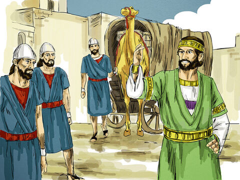

The Parable Of The Talents
For the kingdom of heaven is as a man travelling into a far country, who called his own servants, and delivered unto them his goods.
And unto one he gave five talents, to another two, and to another one; to every man according to his several ability; and straightway took his journey.
Then he that had received the five talents went and traded with the same, and made them other five talents.
And likewise he that had received two, he also gained other two.
But he that had received one went and digged in the earth, and hid his lord's money.
After a long time the lord of those servants cometh, and reckoneth with them.
And so he that had received five talents came and brought other five talents, saying, Lord, thou deliveredst unto me five talents: behold, I have gained beside them five talents more.
His lord said unto him, Well done, thou good and faithful servant: thou hast been faithful over a few things, I will make thee ruler over many things: enter thou into the joy of thy lord.
He also that had received two talents came and said, Lord, thou deliveredst unto me two talents: behold, I have gained two other talents beside them.
His lord said unto him, Well done, good and faithful servant; thou hast been faithful over a few things, I will make thee ruler over many things: enter thou into the joy of thy lord.
Then he which had received the one talent came and said, Lord, I knew thee that thou art an hard man, reaping where thou hast not sown, and gathering where thou hast not strawed:
And I was afraid, and went and hid thy talent in the earth: lo, there thou hast that is thine.
His lord answered and said unto him, Thou wicked and slothful servant, thou knewest that I reap where I sowed not, and gather where I have not strawed:
Thou oughtest therefore to have put my money to the exchangers, and then at my coming I should have received mine own with usury.
Take therefore the talent from him, and give it unto him which hath ten talents.
For unto every one that hath shall be given, and he shall have abundance: but from him that hath not shall be taken away even that which he hath.
And cast ye the unprofitable servant into outer darkness: there shall be weeping and gnashing of teeth.
Matthew 25:14-30
- 